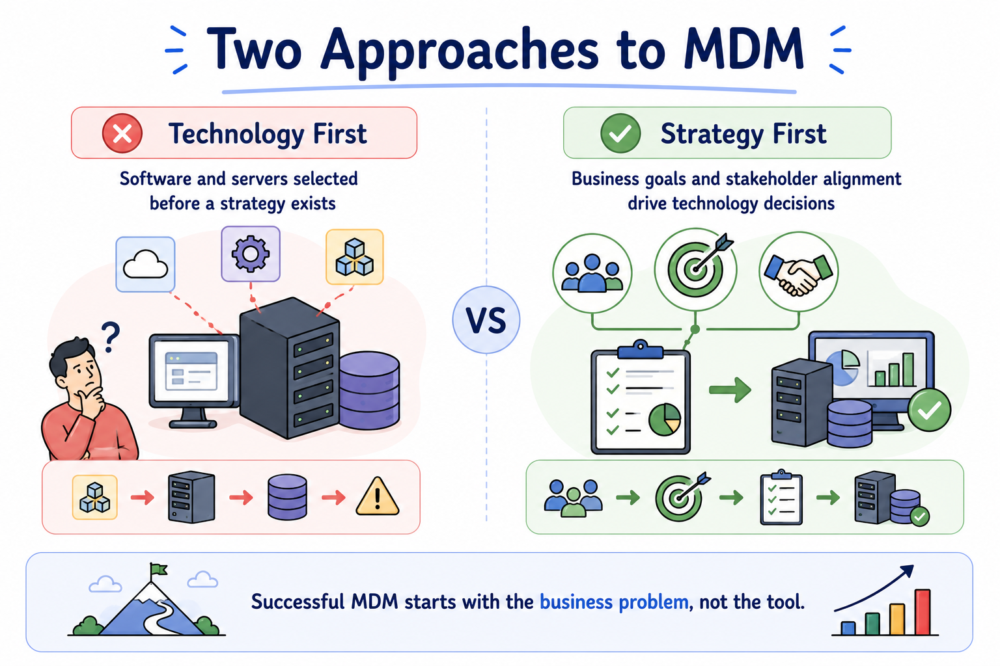
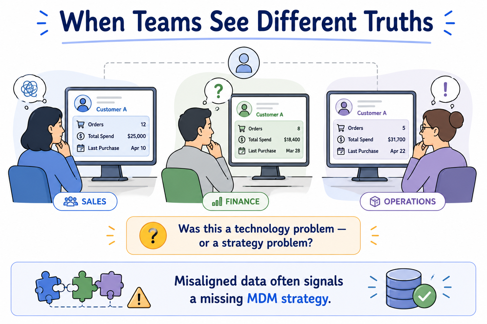
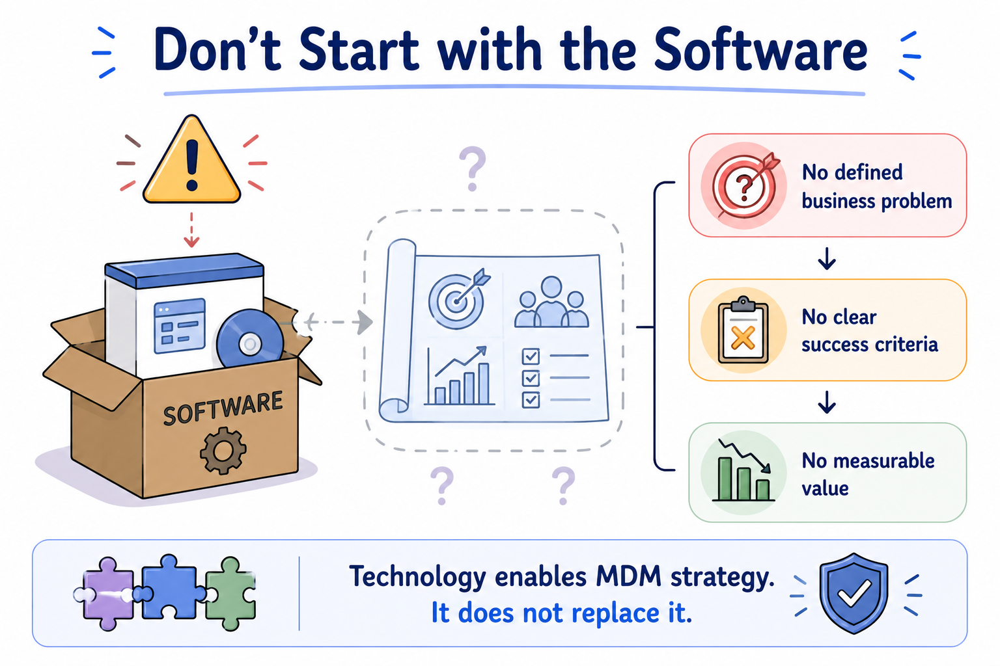
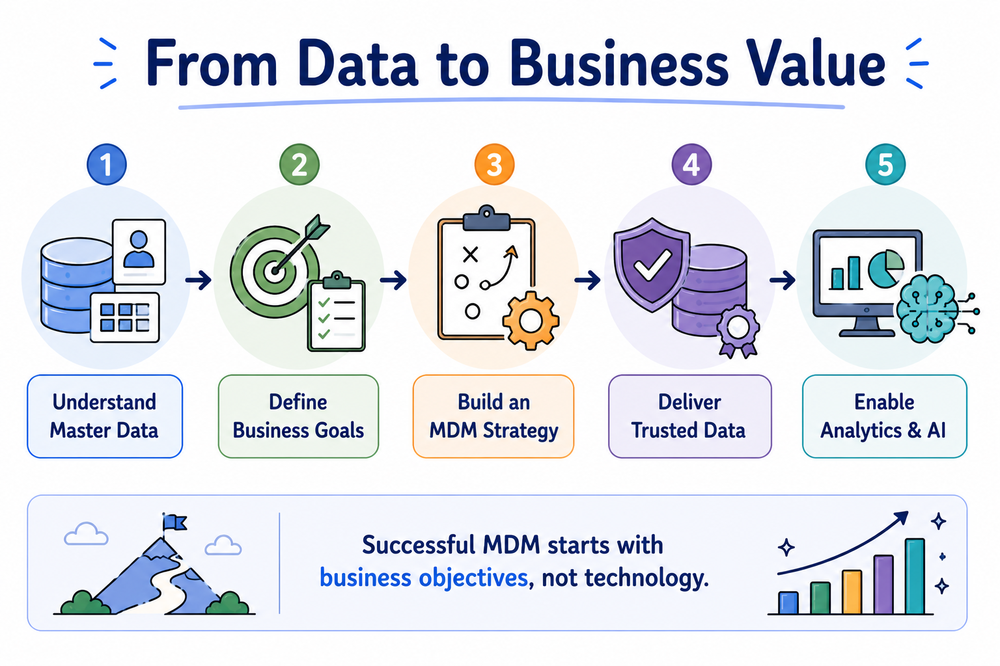

MDM Strategy and Business Case
Module support notes
In Module 2, you learned what master data is, where it comes from, and why organizations depend on trusted business entities. This module shifts the focus from understanding master data to understanding how organizations build a successful Master Data Management program. Rather than treating MDM as a technology project, successful organizations align it with business priorities, measurable outcomes, and long-term strategic goals.

What you'll learn
- Explain why organizations invest in MDM.
- Identify the business goals that drive MDM initiatives.
- Describe the key phases of an MDM implementation roadmap.
- Recognize how organizations measure MDM success.
- Understand why collaboration between business and IT is essential.
A thought to carry with you
As you work through this module, think about a project in your organization that struggled because different teams relied on different versions of the same information. Was the problem caused by technology — or by a lack of strategy, ownership, and shared goals?

Something worth knowing early
Many organizations purchase MDM software before defining what business problem they are trying to solve. Successful MDM initiatives begin with clear business objectives. Technology enables the strategy, but it does not replace it.

The journey ahead
Every topic in this module builds toward the same outcome — an MDM program that starts with business objectives, delivers trusted data, and creates the foundation for reliable analytics and AI. The progression below shows how each step connects.
